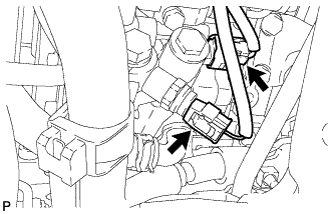
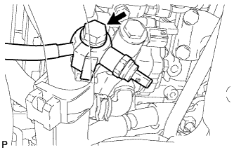
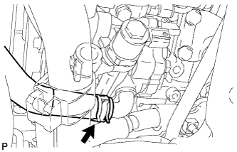
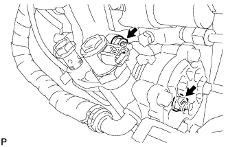

ЛОПАСТНОЙ НАСОС (для моделей с 1KD-FTV) > СНЯТИЕ |
| 1. ОТСОЕДИНИТЕ ПРОВОД ОТ ОТРИЦАТЕЛЬНОГО ВЫВОДА АККУМУЛЯТОРНОЙ БАТАРЕИ |
| 2. СНИМИТЕ ПРАВОЕ ПЕРЕДНЕЕ КОЛЕСО |
| 3. СНИМИТЕ НИЖНЮЮ ОБЛИЦОВКУ ПЕРЕДНЕГО БАМПЕРА |
Освободите фиксатор, выверните 5 болтов и снимите нижнюю накладку переднего бампера.
| 4. СНИМИТЕ ЗАЩИТУ КАРТЕРА ДВИГАТЕЛЯ № 1 В СБОРЕ |
Выверните 4 болта и снимите защиту картера двигателя № 1.
| 5. СНИМИТЕ ЗАДНЮЮ ЗАЩИТУ КАРТЕРА ДВИГАТЕЛЯ В СБОРЕ |
Выверните 4 болта и снимите заднюю защиту картера двигателя.
| 6. СНИМИТЕ УПЛОТНЕНИЕ ФАРТУКА ЛЕВОГО ПЕРЕДНЕГО КРЫЛА |
Расцепите 5 фиксаторов и снимите уплотнение фартука.
| 7. СНИМИТЕ УПЛОТНЕНИЕ МЕЖДУ ФАРТУКОМ ЛЕВОГО ПЕРЕДНЕГО КРЫЛА И РАМОЙ № 1 |
Расцепите 5 фиксаторов и снимите уплотнение фартука.
| 8. СНИМИТЕ ПАТРУБОК ПОДАЧИ ДАВЛЕНИЯ В СБОРЕ |
|  |
Отсоедините 2 разъема.
|  |
Выверните соединительный болт-штуцер и отсоедините нагнетательный патрубок от лопастного насоса.
Снимите прокладку с нагнетательного патрубка.
| 9. ОТСОЕДИНИТЕ ШЛАНГ № 1 СОЕДИНЕНИЯ МАСЛЯНОГО БАЧКА С НАСОСОМ |
|  |
Снимите зажим и отсоедините шланг.
| 10. СНИМИТЕ ЛОПАСТНОЙ НАСОС В СБОРЕ |
|  |
Отверните 2 гайки и снимите лопастной насос.
Снимите кольцевое уплотнение.